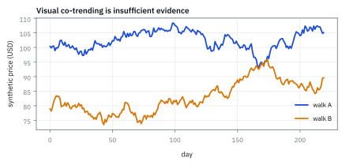
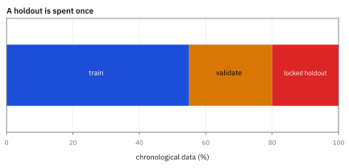

15.5 Spurious Regression and Overfitting
regression ให้ตัวเลขเสมอ แม้คำถามจะไร้ความหมาย: ระดับราคาที่เดินสุ่มให้ $t$ ใหญ่ปลอม ตัวแปรที่มากเกินให้ $R^2$ ฟรี และการเลือกผู้ชนะจากหลายแบบให้ Sharpe ปลอม
นักวิเคราะห์ถดถอย log ราคาหุ้น A บน log ราคาหุ้น B ย้อนหลัง 750 วันซื้อขาย (ราวสามปี) ในช่วงที่ตลาดขึ้นทั้งคู่ ได้ $R^2=0.70$ และ $t=41$ แล้วสรุปว่า B อธิบาย A ได้ 70% ถ้ารู้ภายหลังว่าสองเส้นนี้ถูกสุ่มแยกกันโดยไม่มีอะไรเชื่อมกันเลย ผลแบบนี้เกิดบ่อยแค่ไหน และในผลลัพธ์มีอะไรเตือนได้ก่อนหรือไม่?
ลองตอบก่อนเปิดเฉลย
เกิดบ่อยมาก การจำลอง 2,000 ครั้งที่สองเส้นเดินสุ่มแยกกันและ drift ขึ้นวันละ 0.08% เหมือนกัน ได้ $R^2$ เกิน 0.70 ถึง 49.6% ของครั้ง และ $|t|\gt1.96$ ถึง 98.5% สัญญาณเตือนอยู่ในผลเดียวกันนั้นเอง: Durbin–Watson ราว 0.021 ต่ำกว่า $R^2$ มาก แปลว่า residual แทบไม่ขยับจากวันก่อน ถดถอยการเปลี่ยนรายวันแทน $R^2$ เหลือราว 0.0007 และ $|t|\gt1.96$ เหลือ 5% ตามที่ควร
สิ่งที่เราจะสร้าง
15.1 ถึง 15.4 สร้างเครื่องมือ หน้านี้ดูว่าเครื่องมือเดียวกันหลอกเราได้อย่างไร มีโรคสามชนิดที่อาการคล้ายกัน คือผลในข้อมูลเก่าสวยแต่พังในข้อมูลใหม่ โรคแรกคือ spurious regression มาจากระดับที่เดินสุ่ม โรคที่สองคือ overfitting มาจากตัวแปรมากเกินข้อมูล โรคที่สามคือการเลือกผู้ชนะจากหลายแบบ
เราจะเริ่มจากว่าทำไม random walk ดูเหมือนมี trend ทำการทดลองให้เห็นขนาดของปัญหา อธิบายว่าทำไม $t$ ระเบิดด้วย effective sample size จับด้วย Durbin–Watson แล้วรักษาด้วยผลต่าง จากนั้นวัด $R^2$ ที่ได้ฟรีจากตัวแปรขยะ นับว่าข้อมูลรองรับตัวแปรได้กี่ตัว วัดว่าการเลือกผู้ชนะจาก 400 แบบให้ Sharpe ปลอมเท่าไร และจบที่วิธีทดสอบที่ซื่อสัตย์
ศัพท์ที่ใช้ในหัวข้อนี้
- Spurious regression
- regression ของระดับสองอนุกรมที่เดินสุ่มโดยไม่เกี่ยวกัน แต่ได้ $R^2$ สูงและ $t$ ใหญ่ เพราะสมมติฐานของ SE พัง
- Overfitting
- การปรับ model ให้เข้ากับข้อมูลเก่ามากจนจับ noise เฉพาะตัวอย่างไปด้วย ผลนอกตัวอย่างจึงแย่ลง
- Effective sample size
- จำนวนข้อมูลอิสระที่ให้ความแม่นเท่ากับข้อมูลที่ติดกันจริง ใช้แก้ SE เมื่อข้อมูลแต่ละวันไม่อิสระกัน
- Durbin–Watson (DW)
- ตัวเลขวัดว่า residual วันติดกันต่างกันแค่ไหน ใกล้ 2 คือปกติ ใกล้ 0 คือ residual แทบไม่ขยับ ใช้จับ regression ลวงบนระดับราคา
- Data snooping
- การลองหลายแบบบนข้อมูลชุดเดียวแล้วรายงานเฉพาะแบบที่ดีที่สุด ผลของผู้ชนะจึงเอนขึ้นแม้ไม่มีแบบไหนดีจริง
- Walk-forward validation
- การ fit ด้วยข้อมูลถึงวันหนึ่งแล้วทดสอบกับช่วงถัดไปที่ยังไม่เคยเห็น แล้วเลื่อนไปเรื่อย ๆ รักษาลำดับเวลาของการตัดสินใจ
- Holdout
- ข้อมูลช่วงท้ายที่ล็อกไว้และเปิดดูครั้งเดียวหลังตรึง model แล้ว ถ้าเปิดแล้วกลับไปปรับ มันก็กลายเป็นข้อมูลฝึกอีกชุด
สัญลักษณ์และหน่วย
| สัญลักษณ์ | ความหมาย | หน่วย |
|---|---|---|
| $A_t,\ B_t$ | log ราคาของสองหุ้น วัดจากวันเริ่ม | หน่วย log ราคา |
| $\varepsilon_t,\ \sigma$ | shock รายวันของ random walk และ SD ของมัน | หน่วย log ราคา |
| $e_t,\ \rho_e$ | residual ของ regression และ autocorrelation ที่ lag หนึ่งของมัน | หน่วย log ราคา และไม่มีหน่วย |
| $n,\ n_{\rm eff}$ | จำนวนวัน และจำนวนข้อมูลอิสระเทียบเท่า | วัน |
| $k$ | จำนวนตัวแปรอธิบายใน model | นับ |
| $M$ | จำนวนแบบที่ลองก่อนเลือกผู้ชนะ | นับ |
| $Z_m$ | ค่าทดสอบของแบบที่ $m$ ภายใต้สมมติฐานว่าไม่มีฝีมือ | SD |
| $\varphi,\ \Phi$ | density และ CDF ของ Normal มาตรฐาน | ไม่มีหน่วย |
ขั้นที่ 1 — ทำไม random walk ดูเหมือนมี trend
ก่อนดูการทดลอง ต้องเข้าใจว่าเส้นที่เดินสุ่มหน้าตาเป็นอย่างไร log ราคาเป็น random walk (9.1) ถ้าแต่ละวันบวก shock อิสระที่ค่าเฉลี่ยศูนย์ SD 1% วัดว่าหลัง 750 วันเส้นอยู่ห่างจุดเริ่มแค่ไหน
variance ของผลรวมของ shock อิสระคือผลบวกของ variance จึงโตตามจำนวนวัน ไม่มีแรงไหนดึงกลับ ก้าวละ 1% แต่สามปีห่างจุดเริ่มได้ราว 27% และเส้นมักอยู่ฝั่งเดียวของจุดเริ่มนาน ๆ ดูเหมือนมี trend ทั้งที่ไม่มี
สองเส้นที่สุ่มแยกกันต่างก็ไปไกล บางคู่บังเอิญไปทางเดียวกัน บางคู่สวนกัน OLS วัดว่าระดับของสองเส้นเรียงกันแค่ไหน มันจึงเจอ “ความสัมพันธ์” ที่แรงในคู่ที่บังเอิญเรียงกัน
Figure 15.5a — random walk สองเส้นที่ดูเหมือนเกี่ยวกัน

ขั้นที่ 2 — การทดลอง: ถดถอยระดับที่ไม่เกี่ยวกัน 2,000 ครั้ง
โจทย์ให้อะไรมาบ้าง: สร้าง log ราคาสองเส้นที่อิสระกันสนิท เส้นละ 750 วัน shock รายวัน SD 1% ความจริงคือ slope เป็นศูนย์ ถดถอยระดับของ A บนระดับของ B และถดถอยการเปลี่ยนรายวันของ A บนของ B ทำซ้ำ 2,000 ครั้ง ชุดแรกไม่มี drift ชุดที่สองให้ทั้งคู่ drift ขึ้นวันละ 0.08% (ราว 20% ต่อปีที่ 252 วัน) เหมือนตลาดกระทิง ใช้ seed ตายตัวในโค้ดท้ายหน้า
| ผล | ไม่มี drift | drift 0.08% ต่อวัน |
|---|---|---|
| ระดับ: median $R^2$ | 0.164 | 0.696 |
| ระดับ: $R^2\gt0.70$ | 5.2% | 49.6% |
| ระดับ: median $|t|$ | 12.1 | 41.4 |
| ระดับ: $|t|\gt1.96$ | 90.8% | 98.5% |
| ระดับ: $|t|\gt10$ | 58.0% | 91.6% |
| ระดับ: median DW | 0.021 | 0.021 |
| การเปลี่ยนรายวัน: median $R^2$ | 0.0007 | 0.0007 |
| การเปลี่ยนรายวัน: $|t|\gt1.96$ | 5.9% | 5.0% |
| การเปลี่ยนรายวัน: median DW | 2.00 | 2.00 |
คำตอบ: ถ้าวิธีคิด SE ถูก สัดส่วนที่ $|t|\gt1.96$ ต้องเป็นราว 5% แต่ระดับให้ 90.8% ผิดไปราว 18 เท่า และเมื่อตลาดขึ้นทั้งคู่ ครึ่งหนึ่งของการทดลองให้ $R^2$ เกิน 0.70 ทั้งที่สองเส้นไม่เกี่ยวกันเลย พอเปลี่ยนเป็นการเปลี่ยนรายวัน ทุกอย่างกลับมาตามที่ควร
ตรวจเองใน 10 วินาที: ความคลาดจากการนับ 2,000 ครั้งที่ 5% คือราว $\sqrt{0.05(0.95)/2000}\approx0.5\%$ 5.0% และ 5.9% ของการเปลี่ยนรายวันอยู่ในระยะนั้น ส่วน 90.8% ห่างไปกว่า 170 เท่าของความคลาดนั้น ไม่ใช่โชค
ขั้นที่ 3 — ข้อมูลที่ติดกันนับเป็นข้อมูลอิสระได้กี่ตัว
SE ใน 15.1 สมมติว่า error แต่ละวันอิสระกัน ถ้าไม่อิสระ ข้อมูล $n$ วันให้ความรู้น้อยกว่า $n$ ตัว วัดได้จาก variance ของค่าเฉลี่ย ให้ข้อมูลมี variance $\sigma^2$ และ correlation ระหว่างวันที่ห่างกัน $k$ วันเป็น $\rho^k$ แบบ AR(1)
แต่ละแถว $i$ ของผลรวมสองชั้นมีพจน์ $\rho^0$ หนึ่งตัว และ $\rho^k$ สองตัว (ซ้ายกับขวา) เมื่อ $n$ ใหญ่ ผลของขอบตารางเล็กจนละได้ อนุกรมเรขาคณิตรวมได้ $2\rho/(1-\rho)$ บวก 1 แล้วได้ $(1+\rho)/(1-\rho)$ ดังนั้น $\operatorname{Var}(\bar X)\approx\sigma^2/n_{\rm eff}$ เหมือนมีข้อมูลอิสระ $n_{\rm eff}$ ตัว
autocorrelation แค่ 0.1 กิน 750 วันไปราว 136 ตัว SE ที่คำนวณจาก 750 จึงเล็กเกินจริง ถ้า $\rho$ ใกล้ 1 ตัวคูณ $(1+\rho)/(1-\rho)$ พุ่งขึ้นไม่จำกัด ซึ่งคือสิ่งที่เกิดในขั้นถัดไป
ขั้นที่ 4 — Durbin–Watson จับโรค และผลต่างรักษาโรค
ใน regression ของระดับ residual เองก็เป็นเกือบ random walk มันพลาดทางเดียวกันติดกันหลายร้อยวัน ต้องการตัวเลขที่บอกว่า residual วันนี้ต่างจากเมื่อวานแค่ไหน นั่นคือ DW แล้วแปลงมันกลับเป็น $\rho_e$ เพื่อประเมินว่า SE เล็กเกินไปกี่เท่า
กระจาย $(e_t-e_{t-1})^2$ ได้ $e_t^2+e_{t-1}^2-2e_te_{t-1}$ ผลรวมของสองพจน์แรกเกือบเท่ากับ $2\sum e_t^2$ พจน์ที่สามคือ $2\rho_e\sum e_t^2$ DW ใกล้ 2 เมื่อ residual ไม่ติดกัน ใกล้ 0 เมื่อมันแทบไม่ขยับ DW 0.021 ย้อนกลับเป็น $\rho_e\approx0.99$
ใช้ตัวคูณของขั้นที่ 3 โดยประมาณ SE จริงควรใหญ่กว่าที่พิมพ์ราว 14 เท่า $t$ 12.1 จึงเหลือราว 0.86 ไม่มีนัยสำคัญ กฎหัวแม่มือของ Granger กับ Newbold: ถ้า $R^2$ สูงกว่า DW ให้สงสัยทันที
การรักษาคือถดถอยการเปลี่ยนรายวัน ซึ่งเป็น shock อิสระตามที่ OLS ต้องการ ตารางขั้นที่ 2 แสดงว่าได้ DW 2.00 และ $|t|\gt1.96$ กลับมาราว 5%
ขั้นที่ 5 — $R^2$ ฟรีจากตัวแปรที่เป็น noise ล้วน
โรคที่สองไม่ต้องมี random walk เลย ใส่ตัวแปรอธิบายที่เป็นเลขสุ่มล้วน $k$ ตัว $R^2$ ก็ขึ้นเอง ขึ้นเท่าไร? ใช้เรขาคณิตของ 15.1: หลังหักค่าเฉลี่ย $\tilde{\mathbf y}$ เป็น vector ในพื้นที่ $n-1$ มิติ fitted value คือเงาของมันบนพื้นที่ $k$ มิติที่ตัวแปรขยะกาง
หมุนแกนให้พื้นที่ $k$ มิติของตัวแปรขยะเป็น $k$ แกนแรก ทำได้เพราะความยาวไม่เปลี่ยนเมื่อหมุน ถ้า $y$ เป็น Normal อิสระ ทิศของ $\tilde{\mathbf y}$ สุ่มเท่ากันทุกทาง แต่ละแกนจึงถือความยาวกำลังสองเฉลี่ย $1/(n-1)$ ของทั้งหมด เงาบน $k$ แกนเก็บไว้ $k/(n-1)$ โค้ดท้ายหน้าจำลอง $n=100$, $k=10$ 500 ครั้ง ได้เฉลี่ย 0.1005 เทียบทฤษฎี $10/99\approx0.1010$
ตัวแปรขยะ 50 ตัวบนข้อมูล 750 วันให้ $R^2$ ฟรีราว 6.7% model 50 ตัวที่รายงาน $R^2$ 10% จึงเหลือของจริงหลังปรับแค่ราว 3.6% ส่วนที่เหลือคือ noise ที่ถูกฟิตเข้าไป
ขั้นที่ 6 — ข้อมูล 750 วันรองรับตัวแปรได้กี่ตัว
โจทย์ให้อะไรมาบ้าง: กฎหัวแม่มือที่ใช้กันคืออยากได้ข้อมูลอิสระราว 30 จุดต่อ parameter หนึ่งตัว (เป็นกฎที่คนใช้ ไม่ใช่ทฤษฎีบท) ข้อมูล 750 วัน ผลตอบแทนมี autocorrelation ที่ lag หนึ่ง 0.1, 0.3 หรือ 0.6 ใช้ $n_{\rm eff}$ ของขั้นที่ 3
คำตอบ: ถ้าข้อมูลอิสระจริงรองรับได้ราว 25 ตัว autocorrelation 0.1 เหลือ 20 ตัว 0.3 เหลือ 13 ตัว และ 0.6 เหลือแค่ 6 ตัว เก็บข้อมูลยาวขึ้นก็ไม่ฟรี เพราะข้อมูลที่ยาวขึ้นมักคร่อมหลายสภาวะตลาดที่ความสัมพันธ์ไม่เหมือนกัน
ตรวจเองใน 10 วินาที: $0.9/1.1\approx0.818$ คูณ 750 ได้ราว 614 หาร 30 ได้ 20.5 ปัดลงเป็น 20 ตัวแปร
Figure 15.5b — ยิ่งซับซ้อน ข้อมูลเก่ายิ่งสวย แต่อนาคตไม่ตาม

ขั้นที่ 7 — ผู้ชนะจาก 400 แบบ: Sharpe ปลอมสูงแค่ไหน
โรคที่สามเกิดแม้ทุกแบบเป็น noise ล้วน ทีมลอง 20 สัญญาณ × 5 ช่วงเวลา × 4 เกณฑ์ = 400 แบบ ภายใต้สมมติฐานว่าไม่มีแบบไหนมีฝีมือ ค่าทดสอบของแต่ละแบบเป็น Normal มาตรฐานอิสระกัน ถามสามเรื่อง: โอกาสเจอผลบวกปลอมอย่างน้อยหนึ่งแบบ ผู้ชนะคาดว่าจะดูดีแค่ไหน และต้องตั้งเกณฑ์ใหม่ที่เท่าไร
ค่าสูงสุดไม่เกิน $z$ ก็ต่อเมื่อทุกตัวไม่เกิน $z$ และทุกตัวอิสระกัน โอกาสจึงเป็นผลคูณ $\Phi(z)^M$ หาอนุพันธ์ได้ density ของผู้ชนะ แล้วคำนวณค่าคาดหวังด้วย integral เชิงตัวเลขในโค้ด ได้ 2.97 ตำราบางเล่มใช้ $\sqrt{2\ln400}\approx3.46$ แต่นั่นเป็นแค่พจน์นำของค่าประมาณ ซึ่งสูงเกินจริงไปเกือบครึ่ง SD ที่ $M=400$
แปลงเป็น Sharpe: ถ้าแต่ละแบบมี backtest ห้าปี SE ของ Sharpe รายปีภายใต้สมมติฐานว่าไม่มีฝีมือคือราว $1/\sqrt5$ (3.5) ผู้ชนะจาก 400 แบบที่เป็น noise ล้วนจึงคาดว่าโชว์ Sharpe ราว 1.33 ถ้าจะให้ผ่านเกณฑ์ 5% หลังค้นหา 400 แบบ Bonferroni บังคับให้ต้องการค่าทดสอบเกิน 3.66 ไม่ใช่ 1.645 (3.6)
Figure 15.5c — ผู้ชนะที่ถูกเลือกคือ noise ที่สูงที่สุด

ขั้นที่ 8 — นิยามการทดสอบที่ซื่อสัตย์: เดินไปข้างหน้าเท่านั้น
ทั้งสามโรคมีทางป้องกันร่วมกันข้อเดียว: การตัดสินใจทุกอย่างต้องใช้ข้อมูลถึงวันนั้นเท่านั้น แล้วไปวัดผลกับช่วงถัดไปที่ยังไม่เคยเห็น นี่คือนิยามของกระบวนการที่เราเลือกใช้ ไม่ใช่ผลที่พิสูจน์
$\hat\theta_k$ คือทุกอย่างที่ตัดสินใจจากข้อมูลช่วง 1 ถึง $k$: ตัวแปรที่ใช้ parameter เกณฑ์เข้าออก แล้ว $s_{k+1}$ คือผลในช่วงถัดไปที่ model ยังไม่เห็น เลื่อน $k$ ไปทีละช่วงแล้วเก็บผลทุกช่วง การเลือกเกิดก่อนเห็นผลเสมอ ผลที่ได้จึงไม่มีอคติจากการเลือกแบบขั้นที่ 7
สุดท้ายเก็บ holdout ช่วงท้ายไว้ ล็อก model ทั้งหมดก่อน แล้วเปิดดูครั้งเดียว ถ้าผลไม่ดีแล้วกลับไปปรับ holdout นั้นก็หมดสภาพ เพราะมันกลายเป็นข้อมูลที่ใช้เลือกไปแล้ว
Figure 15.5d — ไทม์ไลน์ของข้อมูลที่ใช้ได้ครั้งเดียว

คำถามที่ควรถามออกมาดัง ๆ
ถ้าอยากถดถอยระดับจริง ๆ ล่ะ? ทำได้กรณีเดียวคือระดับสองตัว cointegrate ตาม 15.4 ซึ่ง residual stationary DW จะไม่ใกล้ศูนย์ และต้องใช้เกณฑ์ Engle–Granger ไม่ใช่ $t$ ธรรมดา ถ้าไม่ผ่าน ให้ถดถอยการเปลี่ยนแทน
ถดถอยผลตอบแทนแล้วปลอดภัยหรือยัง? ปลอดภัยจากโรคแรก แต่ยังเป็นโรคที่สองและสามได้เต็มที่ ผลตอบแทนรายวันแทบอิสระกัน SE ของ 15.1 จึงใช้ได้ แต่ถ้าลองตัวแปร 400 ชุดแล้วเลือกชุดที่ดีที่สุด $t$ ของผู้ชนะก็ยังเอนขึ้นตามขั้นที่ 7
ความผิดที่ทำให้ backtest สวยกว่าความจริง
สุ่มแบ่ง fold สำหรับข้อมูลที่เรียงตามเวลา: cross-validation แบบสุ่มเอาวันจากอนาคตไปอยู่ในชุดฝึก model จึงเห็นสภาวะตลาดที่ยังไม่เกิด ณ วันตัดสินใจ ผลที่ได้ดีเกินจริงโดยไม่มี error ขึ้นเลย ต้องแบ่งตามเวลา และเว้นช่องว่างให้ยาวกว่าระยะถือของกลยุทธ์
ไม่นับว่าลองมากี่แบบ: ผลของผู้ชนะจาก 400 แบบต้องเทียบกับ 2.97 ไม่ใช่ 0 และต้องผ่าน 3.66 ไม่ใช่ 1.96 ทีมที่ไม่จดจำนวนแบบที่ลองจะไม่มีทางรู้ว่าต้องหักเท่าไร
เชื่อ $t$ ของ regression ระดับ: ตารางขั้นที่ 2 แสดงว่า $|t|\gt10$ เกิด 58% ของครั้งแม้ไม่มีอะไรเกี่ยวกัน ดู DW ทุกครั้ง ถ้าต่ำกว่า 1 อย่าเชื่อ $t$
ใช้ทำอะไรบนโต๊ะจริง
ทีมวิจัยกลยุทธ์ใช้ขั้นตอนของหน้านี้เป็นด่านก่อนใส่เงินจริง: ทดสอบ unit root ก่อนถดถอยระดับ นับข้อมูลอิสระก่อนเพิ่มตัวแปร จดจำนวนแบบที่ลองไว้ในสมุดวิจัยแล้วหักด้วยการปรับแบบ Bonferroni หรือวิธีที่ใกล้เคียง ทดสอบแบบ walk-forward และเปิด holdout ครั้งเดียว ฝ่ายความเสี่ยงใช้คำถามเดียวกันตรวจกลยุทธ์ที่คนอื่นส่งมา ผลที่ดูดีเกินจริงแทบเป็นสัญญาณเตือนเสมอ
สามโจทย์ตรวจความเข้าใจ
1. regression ของระดับให้ $R^2=0.9$, $t=8$ และ DW 0.8 ควรเชื่อ $t$ แค่ไหน
เฉลย
DW 0.8 ย้อนกลับเป็น $\rho_e\approx1-0.8/2=0.6$ ตัวคูณ SE ราว $\sqrt{1.6/0.4}=2$ $t$ ที่ควรเป็นจึงราว 4 และ $R^2$ 0.9 สูงกว่า DW 0.8 ตามกฎหัวแม่มือต้องสงสัยว่าเป็น regression ลวง ต้องทดสอบ unit root และลองถดถอยการเปลี่ยนก่อนสรุป
2. ทีมลอง 50 กฎที่ระดับ 5% โดยไม่มีกฎไหนดีจริง โอกาสเจอผลบวกปลอมอย่างน้อยหนึ่งกฎคือเท่าไร คาดว่าจะเจอกี่กฎ และเกณฑ์ Bonferroni คือเท่าไร
เฉลย
$1-0.95^{50}\approx92.3\%$ คาดว่าจะเจอ $50\times0.05=2.5$ กฎ Bonferroni ใช้ $0.05/50=0.001$ ด้านเดียว ค่าทดสอบต้องเกิน $\Phi^{-1}(0.999)\approx3.09$
3. มีข้อมูล 250 วันที่ autocorrelation 0.2 ใส่ตัวแปรได้กี่ตัวตามกฎ 30 จุด และถ้าตัวแปรเหล่านั้นเป็น noise ล้วนจะได้ $R^2$ ฟรีเท่าไร
เฉลย
$n_{\rm eff}=250(0.8/1.2)\approx166.7$ หาร 30 ได้ 5.6 ปัดลงเป็น 5 ตัว ตัวแปรขยะ 5 ตัวบนข้อมูล 250 วันให้ $R^2$ ฟรีเฉลี่ย $5/249\approx2.0\%$
คำนวณซ้ำด้วย JavaScript
รันใน Node.js ได้โดยไม่ต้องติดตั้งอะไร โค้ดทำการทดลองของขั้นที่ 2 ด้วย seed ตายตัว คำนวณ $n_{\rm eff}$, $R^2$ ฟรีทั้งตามทฤษฎีและจำลอง ค่าคาดหวังของผู้ชนะจาก $M$ แบบด้วย Simpson และเกณฑ์ Bonferroni ตรวจขนาดข้อมูล ช่วงของ $\rho$ และจำนวนตัวแปร ใช้เวลารันไม่ถึงหนึ่งวินาที
const {sqrt, log, sin, cos, exp, imul, PI, abs} = Math; // local names keep the simulation loops fast
// Seeded standard normals (mulberry32 + Box-Muller) so every reader gets the same experiment.
function normals(seed) {
let a = seed >>> 0, spare = null;
const u = () => {
a = (a + 0x6D2B79F5) >>> 0;
let t = imul(a ^ (a >>> 15), a | 1);
t ^= t + imul(t ^ (t >>> 7), t | 61);
return (((t ^ (t >>> 14)) >>> 0) + 0.5) / 4294967296;
};
return () => {
if (spare !== null) { const z = spare; spare = null; return z; }
const r = sqrt(-2 * log(u())), q = 2 * PI * u();
spare = r * sin(q);
return r * cos(q);
};
}
// OLS of y on x with the usual (independent-error) t and the Durbin-Watson statistic of the residuals.
function regress(x, y) {
if (!Array.isArray(x) || !Array.isArray(y) || x.length !== y.length || x.length < 3) {
throw new RangeError('Need two series of the same length, at least 3 points');
}
const n = x.length;
let mx = 0, my = 0;
for (let i = 0; i < n; i++) { mx += x[i]; my += y[i]; }
mx /= n; my /= n;
let sxx = 0, sxy = 0, syy = 0;
for (let i = 0; i < n; i++) { const dx = x[i] - mx, dy = y[i] - my; sxx += dx * dx; sxy += dx * dy; syy += dy * dy; }
if (sxx === 0) throw new RangeError('x never changes');
const b = sxy / sxx, sse = syy - b * sxy;
let dw = 0, prev = null;
for (let i = 0; i < n; i++) {
const e = (y[i] - my) - b * (x[i] - mx);
if (prev !== null) dw += (e - prev) ** 2;
prev = e;
}
return {b, r2: 1 - sse / syy, t: b / sqrt(sse / (n - 2) / sxx), dw: dw / sse};
}
// Two independent random walks: regress levels, then regress daily changes, many times.
function spurious(runs, days, drift, seed) {
if (!Number.isInteger(runs) || runs < 100 || !Number.isInteger(days) || days < 10 || !Number.isFinite(drift)) {
throw new RangeError('Use at least 100 runs of at least 10 days and a finite drift');
}
const z = normals(seed), levels = [], changes = [];
for (let k = 0; k < runs; k++) {
const A = [0], B = [0]; // log prices measured from the start
for (let t = 1; t < days; t++) { A.push(A[t - 1] + drift + 0.01 * z()); B.push(B[t - 1] + drift + 0.01 * z()); }
levels.push(regress(B, A));
changes.push(regress(B.slice(1).map((v, i) => v - B[i]), A.slice(1).map((v, i) => v - A[i])));
}
const median = (list, key) => list.map(o => abs(o[key])).sort((p, q) => p - q)[Math.floor(runs / 2)];
const share = (list, test) => list.filter(test).length / runs;
return {levels: {medianR2: median(levels, 'r2'), r2Above70: share(levels, o => o.r2 > 0.7), medianT: median(levels, 't'),
t196: share(levels, o => abs(o.t) > 1.96), t10: share(levels, o => abs(o.t) > 10), medianDW: median(levels, 'dw')},
changes: {medianR2: median(changes, 'r2'), t196: share(changes, o => abs(o.t) > 1.96), medianDW: median(changes, 'dw')}};
}
function effectiveN(n, rho) {
if (!(n > 0) || !(abs(rho) < 1)) throw new RangeError('Need n > 0 and |rho| < 1');
return n * (1 - rho) / (1 + rho);
}
// Average R-squared of y on k pure-noise regressors (plus intercept), by simulation; theory says k/(n-1).
function noiseR2(n, k, runs, seed) {
if (!Number.isInteger(n) || !Number.isInteger(k) || k < 1 || n < k + 2 || !Number.isInteger(runs) || runs < 1) {
throw new RangeError('Need whole numbers with n >= k + 2');
}
const z = normals(seed);
let total = 0;
for (let r = 0; r < runs; r++) {
const X = Array.from({length: n}, () => [1, ...Array.from({length: k}, z)]), y = Array.from({length: n}, z);
const m = k + 1, A = Array.from({length: m}, (_, i) => Array.from({length: m + 1}, (_, j) =>
j < m ? X.reduce((s, row) => s + row[i] * row[j], 0) : X.reduce((s, row, t) => s + row[i] * y[t], 0)));
for (let c = 0; c < m; c++) { // Gauss-Jordan on the normal equations
for (let i = 0; i < m; i++) {
if (i === c) continue;
const f = A[i][c] / A[c][c];
for (let j = c; j <= m; j++) A[i][j] -= f * A[c][j];
}
}
const beta = A.map((row, i) => row[m] / row[i]), ybar = y.reduce((s, v) => s + v, 0) / n;
let sse = 0, sst = 0;
for (let t = 0; t < n; t++) {
const fit = X[t].reduce((s, v, j) => s + v * beta[j], 0);
sse += (y[t] - fit) ** 2; sst += (y[t] - ybar) ** 2;
}
total += 1 - sse / sst;
}
return total / runs;
}
const adjustedR2 = (r2, n, k) => 1 - (1 - r2) * (n - 1) / (n - k - 1);
const phiN = x => exp(-x * x / 2) / sqrt(2 * PI);
function simpson(f, lo, hi, n) {
const w = (hi - lo) / n;
let s = 0;
for (let i = 0; i <= n; i++) s += (i === 0 || i === n ? 1 : i % 2 ? 4 : 2) * f(lo + i * w);
return s * w / 3;
}
const Phi = x => (x < -10 ? 0 : x > 10 ? 1 : 0.5 + Math.sign(x) * simpson(phiN, 0, abs(x), 2000));
// E[max of M independent N(0,1)] = integral of z * M phi(z) Phi(z)^(M-1).
function expectedMax(M) {
if (!Number.isInteger(M) || M < 1) throw new RangeError('M must be a positive whole number');
return simpson(z => z * M * phiN(z) * Phi(z) ** (M - 1), -8, 8, 2000);
}
function upperQuantile(p) {
if (!(p > 0 && p < 0.5)) throw new RangeError('Tail probability must lie in (0, 0.5)');
let lo = 0, hi = 10;
for (let i = 0; i < 80; i++) { const mid = (lo + hi) / 2; if (1 - Phi(mid) > p) lo = mid; else hi = mid; }
return (lo + hi) / 2;
}
const plain = spurious(2000, 750, 0, 1), trending = spurious(2000, 750, 0.0008, 2);
const best400 = expectedMax(400);
console.log(JSON.stringify({
plain, trending, sdAt750: 0.01 * sqrt(750),
inflation: sqrt((1 + 0.99) / (1 - 0.99)), trueT: plain.levels.medianT / sqrt((1 + 0.99) / (1 - 0.99)),
rhoFromDW: 1 - plain.levels.medianDW / 2,
effective: [0.1, 0.3, 0.6].map(rho => ({rho, n: effectiveN(750, rho), variables: Math.floor(effectiveN(750, rho) / 30)})),
freeR2: {k20: 20 / 749, k50: 50 / 749, k100: 100 / 749, adjusted: adjustedR2(0.10, 750, 50),
simulated: noiseR2(100, 10, 500, 3), theory: 10 / 99},
search: {anyFalse: 1 - 0.95 ** 400, allClean: 0.95 ** 400, best400, leadingTerm: sqrt(2 * log(400)),
best20: expectedMax(20), bonferroniZ: upperQuantile(0.05 / 400), sharpeSE5y: 1 / sqrt(5), bestSharpe5y: best400 / sqrt(5)},
exercises: {dw08: {rho: 1 - 0.8 / 2, inflation: sqrt(1.6 / 0.4)}, rules50: {anyFalse: 1 - 0.95 ** 50, expected: 50 * 0.05,
z: upperQuantile(0.05 / 50)}, short: {n: effectiveN(250, 0.2), variables: Math.floor(effectiveN(250, 0.2) / 30), freeR2: 5 / 249}}
}));ที่มาที่ไป
ในปี 1926 George Udny Yule ตั้งคำถามว่าทำไมอนุกรมเวลาสองชุดที่ไม่เกี่ยวกันจึงให้ correlation สูงแบบไร้สาระบ่อย ๆ ในปี 1974 Clive Granger กับ Paul Newbold ทำการทดลองแบบเดียวกับขั้นที่ 2 บนคอมพิวเตอร์ และแสดงว่า regression ของ random walk ที่อิสระกันผ่านเกณฑ์นัยสำคัญบ่อยจนน่าตกใจ พร้อมเสนอกฎ $R^2$ สูงกว่า DW ให้สงสัยไว้ บทเรียนคือเครื่องมือสถิติจะให้คำตอบเสมอ หน้าที่ของคนใช้คือรู้ว่าเมื่อไรคำตอบนั้นไร้ความหมาย
ข้อจำกัด: การป้องกันเหล่านี้สมมติอะไร และของจริงเป็นอย่างไร
| เรื่อง | สมมติว่า | ของจริง | ผลเวลาใช้งาน |
|---|---|---|---|
| สูตร $n_{\rm eff}$ | autocorrelation ลดแบบ $\rho^k$ ของ AR(1) | ความผันผวนของตลาดมีความจำยาวกว่านั้น | ตัวเลขเป็นค่าประมาณ ต้องใช้ SE ที่ทนต่อ autocorrelation ด้วย |
| การปรับหลายการทดสอบ | แบบที่ลองอิสระกัน | แบบที่ลองมักคล้ายกันมาก | Bonferroni เข้มเกินไปได้ แต่ดีกว่าไม่ปรับเลย |
| ข้อมูลทดสอบ | มีข้อมูลใหม่ให้ทดสอบเสมอ | ข้อมูลการเงินมีจำกัด และทุกทีมใช้ข้อมูลชุดเดียวกัน | การค้นหาเกินขนาดเกิดในระดับอุตสาหกรรม ไม่ใช่แค่ในทีมเดียว |
| ความมั่นใจ | ผ่านการทดสอบแล้วใช้ได้ | เงินจริงคือการทดสอบสุดท้าย | เริ่มด้วยขนาดเล็กเสมอ ไม่ว่า backtest จะดีแค่ไหน |
สิ่งที่ควรตอบได้หลังอ่าน
- ระดับที่เดินสุ่มแยกกันให้ $|t|\gt1.96$ 90.8% ของครั้ง และเมื่อ drift ขึ้นทั้งคู่ ครึ่งหนึ่งให้ $R^2$ เกิน 0.70
- DW ราว 0.021 คือ residual ที่แทบไม่ขยับ ถ้า $R^2$ สูงกว่า DW ให้สงสัย และถดถอยการเปลี่ยนแทน
- ข้อมูลที่มี autocorrelation $\rho$ นับเป็นข้อมูลอิสระได้ $n(1-\rho)/(1+\rho)$ ตัว 750 วันที่ 0.1 เหลือราว 614
- ตัวแปรขยะ $k$ ตัวให้ $R^2$ ฟรีเฉลี่ย $k/(n-1)$ 50 ตัวบน 750 วันคือ 6.7%
- ผู้ชนะจาก 400 แบบที่เป็น noise คาดว่าอยู่ที่ 2.97 SD หรือ Sharpe ราว 1.33 จาก backtest ห้าปี เกณฑ์ที่ต้องผ่านคือ 3.66
15.6 นำวินัยทั้งหมดนี้ไปใช้กับกลยุทธ์เต็มตัว คือ momentum ตั้งแต่การนิยามสัญญาณ รายชื่อหุ้นที่ต้องรวมหุ้นที่ถูกถอนออกจากตลาด ต้นทุนการซื้อขาย และการนับว่าลองมากี่แบบ